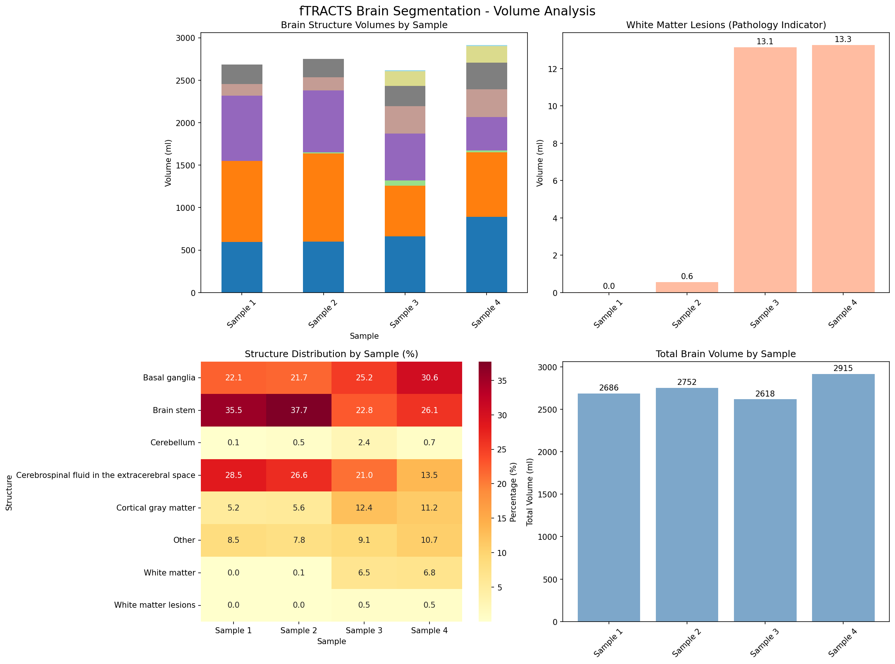
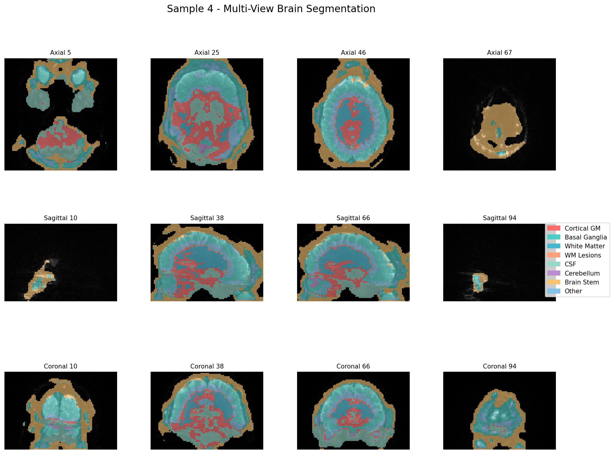

Brain Segmentation Analysis Report
fTRACTS Sample: Sample 4
Analysis Date: 2025-07-25 15:24:05
Input File: data/input/sample4/fTRACTS_07302024-0010-00001-000001-01.nii
Pathology Assessment: Significant
White Matter Lesion Volume: 13.27 ml
Summary Statistics
Total Brain Volume
2915496 mm³ (2915.5 ml)
Segmented Structures
8 brain regions
WM Lesions
13.27 ml (0.46%)
Analysis Method
3D U-Net Deep Learning
Detailed Brain Structure Analysis
| Brain Structure | Volume (mm³) | Volume (ml) | Percentage | Distribution |
|---|---|---|---|---|
| Basal ganglia | 890888 | 890.89 | 30.6% | |
| Brain stem | 759864 | 759.86 | 26.1% | |
| Cerebrospinal fluid in the extracerebral space | 393360 | 393.36 | 13.5% | |
| Cortical gray matter | 325824 | 325.82 | 11.2% | |
| Other | 313280 | 313.28 | 10.7% | |
| White matter | 198000 | 198.00 | 6.8% | |
| Cerebellum | 21008 | 21.01 | 0.7% | |
| White matter lesions | 13272 | 13.27 | 0.5% |
Clinical Significance
⚠️ Significant Pathological Findings
- High white matter lesion burden detected (>10 ml)
- Suggestive of traumatic brain injury or other pathology
- Recommend clinical correlation and follow-up imaging
- Consider neuropsychological assessment
Visualization
Sample Comparison

Volume Analysis
3D Multi-View Analysis
Technical Details
Methodology & Limitations
Analysis Method
- Deep learning-based brain segmentation using 3D U-Net
- Trained on multi-modal MRI data (T1-weighted + FLAIR)
- Adapted for single-channel fTRACTS data
- Automated tissue classification into 11 anatomical regions
Important Limitations
- Model trained on different imaging protocol than fTRACTS
- Results should be validated by experienced neuroradiologist
- Segmentation accuracy may vary with image quality
- Clinical correlation always required for diagnosis
Generated by TBI Analysis Pipeline - ü§ñ Claude Code | Report Date: {datetime.now().strftime("%Y-%m-%d %H:%M:%S")}